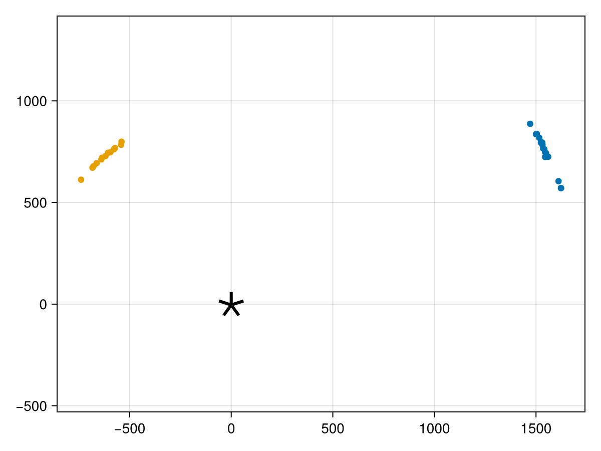
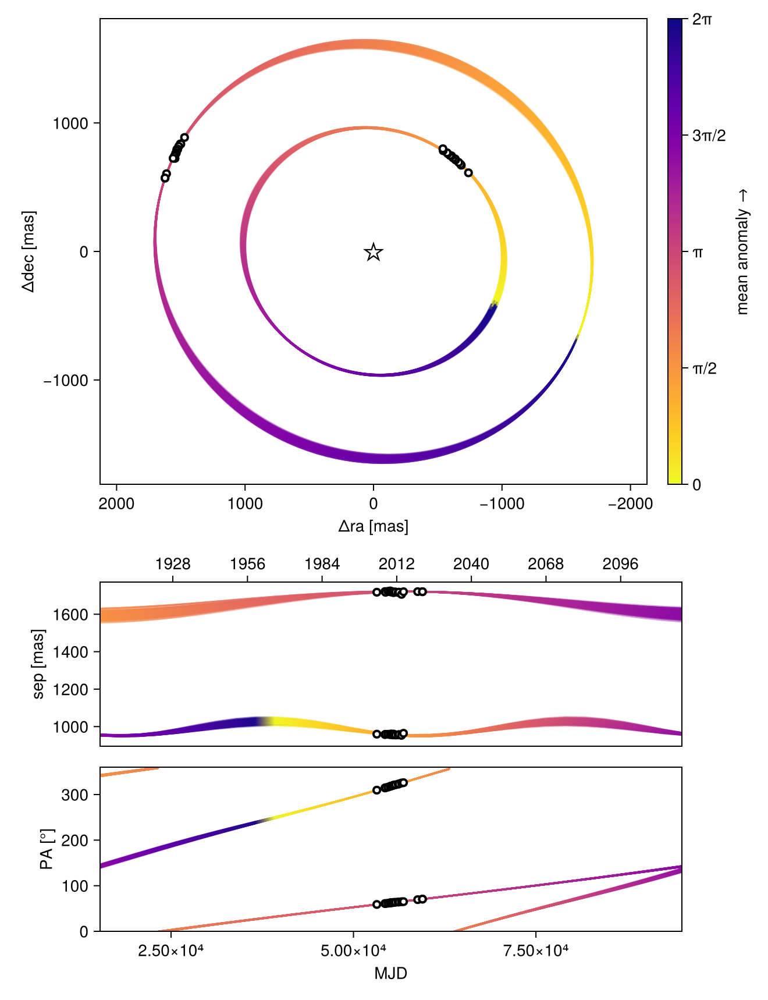
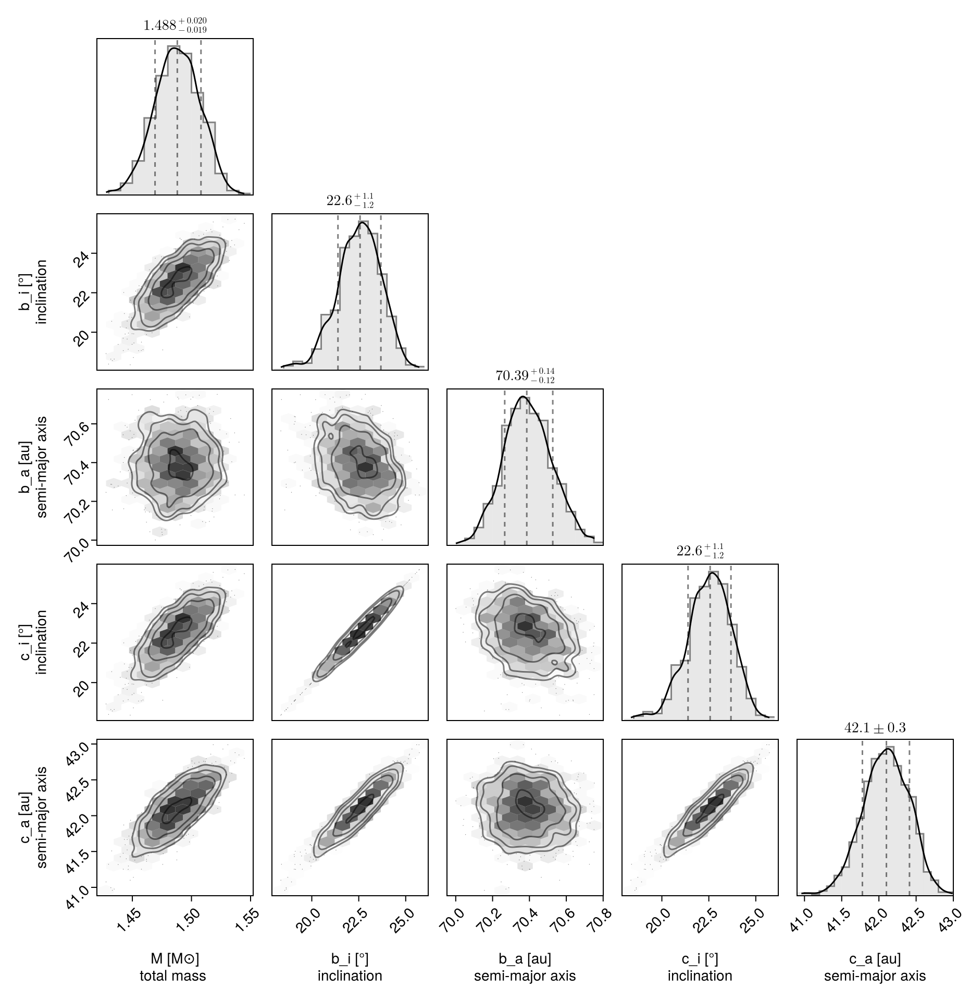
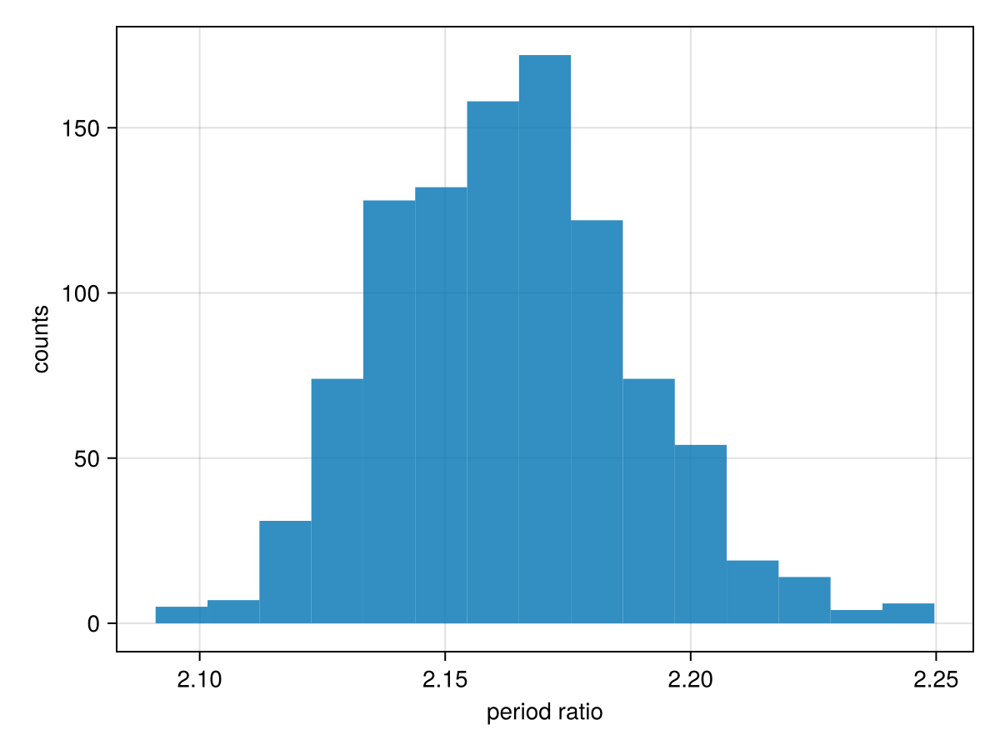

Hierarchical Co-Planar, Resonant Model
This example shows how you can fit a two planet model to relative astrometry data. This functionality would work equally well with RV, images, etc.
We will restrict the two planets to being exactly co-planar, and have a near 2:1 period resonance, and zero-eccentricity.
For this example, we will use astrometry from the HR8799 system collated by Jason Wang and retrieved from the website Whereistheplanet.com.
using Octofitter
using CairoMakie
using PairPlots
using Distributions
using PlanetOrbits┌ Warning: Module Octofitter with build ID ffffffff-ffff-ffff-0000-00562f95da43 is missing from the cache.
│ This may mean Octofitter [daf3887e-d01a-44a1-9d7e-98f15c5d69c9] does not support precompilation but is imported by a module that does.
└ @ Base loading.jl:1948astrom_b = PlanetRelAstromLikelihood(
(epoch=53200.0, object=1, ra=1471.0, σ_ra=6.0, dec=887.0, σ_dec=6.0, cor=0, ),
(epoch=54314.0, object=1, ra=1504.0, σ_ra=3.0, dec=837.0, σ_dec=3.0, cor=0, ),
(epoch=54398.0, object=1, ra=1500.0, σ_ra=7.0, dec=836.0, σ_dec=7.0, cor=0, ),
(epoch=54727.0, object=1, ra=1516.0, σ_ra=4.0, dec=818.0, σ_dec=4.0, cor=0, ),
(epoch=55042.0, object=1, ra=1526.0, σ_ra=4.0, dec=797.0, σ_dec=4.0, cor=0, ),
(epoch=55044.0, object=1, ra=1531.0, σ_ra=7.0, dec=794.0, σ_dec=7.0, cor=0, ),
(epoch=55136.0, object=1, ra=1524.0, σ_ra=10.0, dec=795.0, σ_dec=10.0, cor=0, ),
(epoch=55390.0, object=1, ra=1532.0, σ_ra=5.0, dec=783.0, σ_dec=5.0, cor=0, ),
(epoch=55499.0, object=1, ra=1535.0, σ_ra=15.0, dec=766.0, σ_dec=15.0, cor=0, ),
(epoch=55763.0, object=1, ra=1541.0, σ_ra=5.0, dec=762.0, σ_dec=5.0, cor=0, ),
(epoch=56130.0, object=1, ra=1545.0, σ_ra=5.0, dec=747.0, σ_dec=5.0, cor=0, ),
(epoch=56226.0, object=1, ra=1549.0, σ_ra=4.0, dec=743.0, σ_dec=4.0, cor=0, ),
(epoch=56581.0, object=1, ra=1545.0, σ_ra=22.0, dec=724.0, σ_dec=22.0, cor=0, ),
(epoch=56855.0, object=1, ra=1560.0, σ_ra=13.0, dec=725.0, σ_dec=13.0, cor=0, ),
(epoch=58798.03906, object=1, ra=1611.002, σ_ra=0.133, dec=604.893, σ_dec=0.199, cor=-0.406, ),
(epoch=59453.245, object=1, ra=1622.924, σ_ra=0.32, dec=570.534, σ_dec=0.296, cor=-0.905, ),
(epoch=59454.231, object=1, ra=1622.872, σ_ra=0.204, dec=571.296, σ_dec=0.446, cor=-0.79, ),
)
astrom_c = PlanetRelAstromLikelihood(
(epoch=53200.0, object=2, ra=-739.0, σ_ra=6.0, dec=612.0, σ_dec=6.0, cor=0, ),
(epoch=54314.0, object=2, ra=-683.0, σ_ra=4.0, dec=671.0, σ_dec=4.0, cor=0, ),
(epoch=54398.0, object=2, ra=-678.0, σ_ra=7.0, dec=678.0, σ_dec=7.0, cor=0, ),
(epoch=54727.0, object=2, ra=-663.0, σ_ra=3.0, dec=693.0, σ_dec=3.0, cor=0, ),
(epoch=55042.0, object=2, ra=-639.0, σ_ra=4.0, dec=712.0, σ_dec=4.0, cor=0, ),
(epoch=55136.0, object=2, ra=-636.0, σ_ra=9.0, dec=720.0, σ_dec=9.0, cor=0, ),
(epoch=55390.0, object=2, ra=-619.0, σ_ra=4.0, dec=728.0, σ_dec=4.0, cor=0, ),
(epoch=55499.0, object=2, ra=-607.0, σ_ra=12.0, dec=744.0, σ_dec=12.0, cor=0, ),
(epoch=55763.0, object=2, ra=-595.0, σ_ra=4.0, dec=747.0, σ_dec=4.0, cor=0, ),
(epoch=56130.0, object=2, ra=-578.0, σ_ra=5.0, dec=761.0, σ_dec=5.0, cor=0, ),
(epoch=56226.0, object=2, ra=-572.0, σ_ra=3.0, dec=768.0, σ_dec=3.0, cor=0, ),
(epoch=56581.0, object=2, ra=-542.0, σ_ra=22.0, dec=784.0, σ_dec=22.0, cor=0, ),
(epoch=56855.0, object=2, ra=-540.0, σ_ra=12.0, dec=799.0, σ_dec=12.0, cor=0, ),
)
fig = Makie.scatter(astrom_b.table.ra, astrom_b.table.dec, axis=(;autolimitaspect=1))
Makie.scatter!(astrom_c.table.ra, astrom_c.table.dec)
Makie.scatter!([0], [0], marker='⋆', markersize=50, color=:black)
fig
We now specify our two planet model for planets b & c.
@planet b Visual{KepOrbit} begin
e = 0.0
ω = 0.0
# Use the system inclination and longitude of ascending node
# variables
i = system.i
Ω = system.Ω
# Specify the period as ~ 1% around 2X the P_nominal variable
P_mul ~ Normal(1, 0.1)
P = 2*system.P_nominal * b.P_mul
a = cbrt(system.M * b.P^2)
θ ~ UniformCircular()
tp = θ_at_epoch_to_tperi(system,b,59454.231) # reference epoch for θ. Choose an MJD date near your data.
end astrom_b
@planet c Visual{KepOrbit} begin
e = 0.0
ω = 0.0
# Use the system inclination and longitude of ascending node
# variables
i = system.i
Ω = system.Ω
# Specify the period as ~ 1% the P_nominal variable
P_mul ~ truncated(Normal(1, 0.1), lower=0)
P = system.P_nominal * c.P_mul
a = cbrt(system.M * c.P^2)
θ ~ UniformCircular()
tp = θ_at_epoch_to_tperi(system,c,59454.231) # reference epoch for θ. Choose an MJD date near your data.
end astrom_c
@system HR8799_res_co begin
plx ~ gaia_plx(;gaia_id=2832463659640297472)
M ~ truncated(Normal(1.5, 0.02), lower=0)
# We create inclination and longitude of ascending node variables at the
# system level.
i ~ Sine()
Ω ~ UniformCircular()
# We create a nominal period of planet c variable.
P_nominal ~ Uniform(50, 300) # years
end b c
model = Octofitter.LogDensityModel(HR8799_res_co)LogDensityModel for System HR8799_res_co of dimension 12 with fields .ℓπcallback and .∇ℓπcallback
Let's now sample from the model:
using Random
rng = Xoshiro(0) # seed the random number generator for reproducible results
results = octofit(rng, model)Chains MCMC chain (1000×42×1 Array{Float64, 3}):
Iterations = 1:1:1000
Number of chains = 1
Samples per chain = 1000
Wall duration = 64.29 seconds
Compute duration = 64.29 seconds
parameters = plx, M, i, Ωy, Ωx, P_nominal, Ω, b_P_mul, b_θy, b_θx, b_e, b_ω, b_i, b_Ω, b_P, b_a, b_θ, b_tp, c_P_mul, c_θy, c_θx, c_e, c_ω, c_i, c_Ω, c_P, c_a, c_θ, c_tp
internals = n_steps, is_accept, acceptance_rate, hamiltonian_energy, hamiltonian_energy_error, max_hamiltonian_energy_error, tree_depth, numerical_error, step_size, nom_step_size, is_adapt, loglike, logpost, tree_depth, numerical_error
Summary Statistics
parameters mean std mcse ess_bulk ess_tail rha ⋯
Symbol Float64 Float64 Float64 Float64 Float64 Float6 ⋯
plx 24.4519 0.0454 0.0015 964.0744 582.0105 1.002 ⋯
M 1.4880 0.0190 0.0007 653.4387 559.8567 0.999 ⋯
i 0.3928 0.0208 0.0008 650.2281 472.0312 1.000 ⋯
Ωy -0.3981 0.0431 0.0017 684.6693 623.5364 1.001 ⋯
Ωx -0.9277 0.0929 0.0036 682.6403 481.5767 1.001 ⋯
P_nominal 232.0913 14.6704 1.0387 187.5391 146.5905 0.999 ⋯
Ω -1.9763 0.0198 0.0008 649.9703 543.4901 1.001 ⋯
b_P_mul 1.0472 0.0664 0.0047 186.2912 160.8651 0.999 ⋯
b_θy 0.3334 0.0323 0.0011 950.3506 696.6948 1.000 ⋯
b_θx 0.9489 0.0920 0.0030 950.9849 696.6948 1.000 ⋯
b_e 0.0000 0.0000 NaN NaN NaN Na ⋯
b_ω 0.0000 0.0000 NaN NaN NaN Na ⋯
b_i 0.3928 0.0208 0.0008 650.2281 472.0312 1.000 ⋯
b_Ω -1.9763 0.0198 0.0008 649.9703 543.4901 1.001 ⋯
b_P 484.1801 3.3623 0.1357 627.7980 513.6749 1.002 ⋯
b_a 70.3916 0.1315 0.0042 979.9219 692.6691 1.002 ⋯
b_θ 1.2330 0.0001 0.0000 921.5255 734.6133 1.000 ⋯
⋮ ⋮ ⋮ ⋮ ⋮ ⋮ ⋮ ⋱
2 columns and 12 rows omitted
Quantiles
parameters 2.5% 25.0% 50.0% 75.0% 9 ⋯
Symbol Float64 Float64 Float64 Float64 Flo ⋯
plx 24.3594 24.4216 24.4541 24.4831 24. ⋯
M 1.4502 1.4756 1.4880 1.5010 1. ⋯
i 0.3505 0.3801 0.3939 0.4069 0. ⋯
Ωy -0.4876 -0.4264 -0.3950 -0.3690 -0. ⋯
Ωx -1.1171 -0.9871 -0.9226 -0.8672 -0. ⋯
P_nominal 204.7604 221.3331 231.7111 242.9352 260. ⋯
Ω -2.0176 -1.9904 -1.9761 -1.9613 -1. ⋯
b_P_mul 0.9282 0.9979 1.0464 1.0943 1. ⋯
b_θy 0.2794 0.3097 0.3306 0.3548 0. ⋯
b_θx 0.7956 0.8821 0.9413 1.0096 1. ⋯
b_e 0.0000 0.0000 0.0000 0.0000 0. ⋯
b_ω 0.0000 0.0000 0.0000 0.0000 0. ⋯
b_i 0.3505 0.3801 0.3939 0.4069 0. ⋯
b_Ω -2.0176 -1.9904 -1.9761 -1.9613 -1. ⋯
b_P 477.8989 481.9614 484.0242 486.3155 491. ⋯
b_a 70.1454 70.2992 70.3856 70.4765 70. ⋯
b_θ 1.2328 1.2329 1.2330 1.2330 1. ⋯
⋮ ⋮ ⋮ ⋮ ⋮ ⋮ ⋱
1 column and 12 rows omitted
Plots the orbits:
octoplot(model, results)
Corner plot:
octocorner(model, results, small=true)
Now examine the period ratio:
hist(
results[:b_P][:] ./ results[:c_P][:],
axis=(;
xlabel="period ratio",
ylabel="counts",
)
)